原文连接:https://www.cnblogs.com/tianzhiliang/p/11739372.html
一、netty的Pipeline模型
netty的Pipeline模型用的是责任链设计模式，当boss线程监控到绑定端口上有accept事件，此时会为该socket连接实例化Pipeline，并将InboundHandler和OutboundHandler按序加载到Pipeline中，然后将该socket连接（也就是Channel对象）挂载到selector上。一个selector对应一个线程，该线程会轮询所有挂载在他身上的socket连接有没有read或write事件，然后通过线程池去执行Pipeline的业务流。selector如何查询哪些socket连接有read或write事件，主要取决于调用操作系统的哪种IO多路复用内核，如果是select（注意，此处的select是指操作系统内核的select IO多路复用，不是netty的seletor对象），那么将会遍历所有socket连接，依次询问是否有read或write事件，最终操作系统内核将所有IO事件的socket连接返回给netty进程，当有很多socket连接时，这种方式将会大大降低性能，因为存在大量socket连接的遍历和内核内存的拷贝。如果是epoll，性能将会大幅提升，因为他基于完成端口事件，已经维护好有IO事件的socket连接列表，selector直接取走，无需遍历，也少掉内核内存拷贝带来的性能损耗。
Pipeline的责任链是通过ChannelHandlerContext对象串联的，ChannelHandlerContext对象里封装了ChannelHandler对象，通过prev和next节点实现双向链表。Pipeline的首尾节点分别是head和tail，当selector轮询到socket有read事件时，将会触发Pipeline责任链，从head开始调起第一个InboundHandler的ChannelRead事件，接着通过fire方法依次触发Pipeline上的下一个ChannelHandler，如下图：
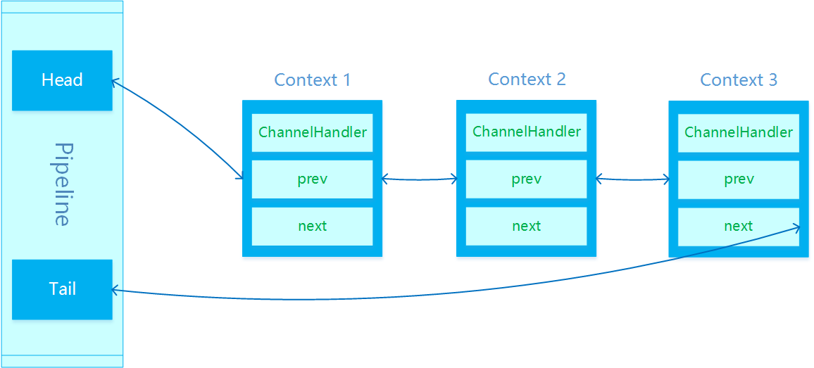
ChannelHandler分为InbounHandler和OutboundHandler，InboundHandler用来处理接收消息，OutboundHandler用来处理发送消息。head的ChannelHandler既是InboundHandler又是OutboundHandler，无论是read还是write都会经过head，所以head封装了unsafe方法，用来操作socket的read和write。tail的ChannelHandler只是InboundHandler，read的Pipleline处理将会最终到达tail。
二、通过六组实验验证InboundHandler和OutboundHandler的执行顺序
在做实验之前，先把实验代码贴出来。
EchoServer类：


1 package com.wisdlab.nettylab;
2
3 import io.netty.bootstrap.ServerBootstrap;
4 import io.netty.channel.ChannelFuture;
5 import io.netty.channel.ChannelInitializer;
6 import io.netty.channel.ChannelOption;
7 import io.netty.channel.EventLoopGroup;
8 import io.netty.channel.nio.NioEventLoopGroup;
9 import io.netty.channel.socket.SocketChannel;
10 import io.netty.channel.socket.nio.NioServerSocketChannel;
11
12 /**
13 * @ClassName EchoServer
14 * @Description TODO
15 * @Author felix
16 * @Date 2019/9/26 10:37
17 * @Version 1.0
18 **/
19 public class EchoServer {
20 private int port;
21
22 public EchoServer(int port) {
23 this.port = port;
24 }
25
26 private void run() {
27 EventLoopGroup bossGroup = new NioEventLoopGroup();
28 EventLoopGroup workGroup = new NioEventLoopGroup();
29
30 try {
31 ServerBootstrap serverBootstrap = new ServerBootstrap();
32 serverBootstrap.group(bossGroup, workGroup)
33 .channel(NioServerSocketChannel.class)
34 .childHandler(new ChannelInitializer<SocketChannel>() {
35 @Override
36 protected void initChannel(SocketChannel socketChannel) throws Exception {
37 //outboundhandler一定要放在最后一个inboundhandler之前
38 //否则outboundhandler将不会执行到
39 socketChannel.pipeline().addLast(new EchoOutboundHandler3());
40 socketChannel.pipeline().addLast(new EchoOutboundHandler2());
41 socketChannel.pipeline().addLast(new EchoOutboundHandler1());
42
43 socketChannel.pipeline().addLast(new EchoInboundHandler1());
44 socketChannel.pipeline().addLast(new EchoInboundHandler2());
45 socketChannel.pipeline().addLast(new EchoInboundHandler3());
46 }
47 })
48 .option(ChannelOption.SO_BACKLOG, 10000)
49 .childOption(ChannelOption.SO_KEEPALIVE, true);
50 System.out.println("EchoServer正在启动.");
51
52 ChannelFuture channelFuture = serverBootstrap.bind(port).sync();
53 System.out.println("EchoServer绑定端口" + port);
54
55 channelFuture.channel().closeFuture().sync();
56 System.out.println("EchoServer已关闭.");
57 } catch (Exception e) {
58 e.printStackTrace();
59 } finally {
60 bossGroup.shutdownGracefully();
61 workGroup.shutdownGracefully();
62 }
63 }
64
65 public static void main(String[] args) {
66 int port = 8080;
67 if (args != null && args.length > 0) {
68 try {
69 port = Integer.parseInt(args[0]);
70 } catch (Exception e) {
71 e.printStackTrace();
72 }
73 }
74
75 EchoServer server = new EchoServer(port);
76 server.run();
77 }
78 }EchoInboundHandler1类：
1 package com.wisdlab.nettylab;
2
3 import io.netty.buffer.ByteBuf;
4 import io.netty.buffer.Unpooled;
5 import io.netty.channel.ChannelHandlerContext;
6 import io.netty.channel.ChannelInboundHandlerAdapter;
7 import io.netty.util.CharsetUtil;
8
9 /**
10 * @ClassName EchoInboundHandler1
11 * @Description TODO
12 * @Author felix
13 * @Date 2019/9/26 11:15
14 * @Version 1.0
15 **/
16 public class EchoInboundHandler1 extends ChannelInboundHandlerAdapter {
17 @Override
18 public void channelRead(ChannelHandlerContext ctx, Object msg) throws Exception {
19 System.out.println("进入 EchoInboundHandler1.channelRead");
20
21 String data = ((ByteBuf)msg).toString(CharsetUtil.UTF_8);
22 System.out.println("EchoInboundHandler1.channelRead 收到数据：" + data);
23 ctx.fireChannelRead(Unpooled.copiedBuffer("[EchoInboundHandler1] " + data, CharsetUtil.UTF_8));
24
25 System.out.println("退出 EchoInboundHandler1 channelRead");
26 }
27
28 @Override
29 public void channelReadComplete(ChannelHandlerContext ctx) throws Exception {
30 System.out.println("[EchoInboundHandler1.channelReadComplete]");
31 }
32
33 @Override
34 public void exceptionCaught(ChannelHandlerContext ctx, Throwable cause) throws Exception {
35 System.out.println("[EchoInboundHandler1.exceptionCaught]" + cause.toString());
36 }
37 }EchoInboundHandler2类：
1 package com.wisdlab.nettylab;
2
3 import io.netty.buffer.ByteBuf;
4 import io.netty.buffer.Unpooled;
5 import io.netty.channel.ChannelHandlerContext;
6 import io.netty.channel.ChannelInboundHandlerAdapter;
7 import io.netty.util.CharsetUtil;
8
9 /**
10 * @ClassName EchoInboundHandler2
11 * @Description TODO
12 * @Author felix
13 * @Date 2019/9/27 15:35
14 * @Version 1.0
15 **/
16 public class EchoInboundHandler2 extends ChannelInboundHandlerAdapter {
17 @Override
18 public void channelRead(ChannelHandlerContext ctx, Object msg) throws Exception {
19 System.out.println("进入 EchoInboundHandler2.channelRead");
20
21 String data = ((ByteBuf) msg).toString(CharsetUtil.UTF_8);
22 System.out.println("EchoInboundHandler2.channelRead 接收到数据：" + data);
23 //ctx.writeAndFlush(Unpooled.copiedBuffer("[第一次write] [EchoInboundHandler2] " + data, CharsetUtil.UTF_8));
24 ctx.channel().writeAndFlush(Unpooled.copiedBuffer("测试一下channel().writeAndFlush", CharsetUtil.UTF_8));
25 ctx.fireChannelRead(Unpooled.copiedBuffer("[EchoInboundHandler2] " + data, CharsetUtil.UTF_8));
26
27 System.out.println("退出 EchoInboundHandler2 channelRead");
28 }
29
30 @Override
31 public void channelReadComplete(ChannelHandlerContext ctx) throws Exception {
32 System.out.println("[EchoInboundHandler2.channelReadComplete]读取数据完成");
33 }
34
35 @Override
36 public void exceptionCaught(ChannelHandlerContext ctx, Throwable cause) throws Exception {
37 System.out.println("[EchoInboundHandler2.exceptionCaught]");
38 }
39 }EchoInboundHandler3类：
1 package com.wisdlab.nettylab;
2
3 import io.netty.buffer.ByteBuf;
4 import io.netty.buffer.Unpooled;
5 import io.netty.channel.ChannelHandlerContext;
6 import io.netty.channel.ChannelInboundHandlerAdapter;
7 import io.netty.util.CharsetUtil;
8
9 /**
10 * @ClassName EchoInboundHandler3
11 * @Description TODO
12 * @Author felix
13 * @Date 2019/10/23 13:43
14 * @Version 1.0
15 **/
16 public class EchoInboundHandler3 extends ChannelInboundHandlerAdapter {
17 @Override
18 public void channelRead(ChannelHandlerContext ctx, Object msg) throws Exception {
19 System.out.println("进入 EchoInboundHandler3.channelRead");
20
21 String data = ((ByteBuf)msg).toString(CharsetUtil.UTF_8);
22 System.out.println("EchoInboundHandler3.channelRead 接收到数据：" + data);
23 //ctx.writeAndFlush(Unpooled.copiedBuffer("[第二次write] [EchoInboundHandler3] " + data, CharsetUtil.UTF_8));
24 ctx.fireChannelRead(msg);
25
26 System.out.println("退出 EchoInboundHandler3 channelRead");
27 }
28
29 @Override
30 public void channelReadComplete(ChannelHandlerContext ctx) throws Exception {
31 System.out.println("[EchoInboundHandler3.channelReadComplete]读取数据完成");
32 }
33
34 @Override
35 public void exceptionCaught(ChannelHandlerContext ctx, Throwable cause) throws Exception {
36 System.out.println("[EchoInboundHandler3.exceptionCaught]");
37 }
38
39
40 }EchoOutboundHandler1类：
1 package com.wisdlab.nettylab;
2
3 import io.netty.buffer.Unpooled;
4 import io.netty.channel.ChannelHandlerContext;
5 import io.netty.channel.ChannelOutboundHandlerAdapter;
6 import io.netty.channel.ChannelPromise;
7 import io.netty.util.CharsetUtil;
8
9 /**
10 * @ClassName EchoOutboundHandler1
11 * @Description TODO
12 * @Author felix
13 * @Date 2019/9/27 15:36
14 * @Version 1.0
15 **/
16 public class EchoOutboundHandler1 extends ChannelOutboundHandlerAdapter {
17 @Override
18 public void write(ChannelHandlerContext ctx, Object msg, ChannelPromise promise) throws Exception {
19 System.out.println("进入 EchoOutboundHandler1.write");
20
21 //ctx.writeAndFlush(Unpooled.copiedBuffer("[第一次write中的write]", CharsetUtil.UTF_8));
22 ctx.channel().writeAndFlush(Unpooled.copiedBuffer("在OutboundHandler里测试一下channel().writeAndFlush", CharsetUtil.UTF_8));
23 ctx.write(msg);
24
25 System.out.println("退出 EchoOutboundHandler1.write");
26 }
27 }EchoOutboundHandler2类：
1 package com.wisdlab.nettylab;
2
3 import io.netty.buffer.Unpooled;
4 import io.netty.channel.ChannelHandlerContext;
5 import io.netty.channel.ChannelOutboundHandlerAdapter;
6 import io.netty.channel.ChannelPromise;
7 import io.netty.util.CharsetUtil;
8
9 /**
10 * @ClassName EchoOutboundHandler2
11 * @Description TODO
12 * @Author felix
13 * @Date 2019/9/27 15:36
14 * @Version 1.0
15 **/
16 public class EchoOutboundHandler2 extends ChannelOutboundHandlerAdapter {
17
18 @Override
19 public void write(ChannelHandlerContext ctx, Object msg, ChannelPromise promise) throws Exception {
20 System.out.println("进入 EchoOutboundHandler2.write");
21
22 //ctx.writeAndFlush(Unpooled.copiedBuffer("[第二次write中的write]", CharsetUtil.UTF_8));
23 ctx.write(msg);
24
25 System.out.println("退出 EchoOutboundHandler2.write");
26 }
27 }EchoOutboundHandler3类：
1 package com.wisdlab.nettylab;
2
3 import io.netty.channel.ChannelHandlerContext;
4 import io.netty.channel.ChannelOutboundHandlerAdapter;
5 import io.netty.channel.ChannelPromise;
6
7 /**
8 * @ClassName EchoOutboundHandler3
9 * @Description TODO
10 * @Author felix
11 * @Date 2019/10/23 23:23
12 * @Version 1.0
13 **/
14 public class EchoOutboundHandler3 extends ChannelOutboundHandlerAdapter {
15 @Override
16 public void write(ChannelHandlerContext ctx, Object msg, ChannelPromise promise) throws Exception {
17 System.out.println("进入 EchoOutboundHandler3.write");
18
19 ctx.write(msg);
20
21 System.out.println("退出 EchoOutboundHandler3.write");
22 }
23
24 }实验一：在InboundHandler中不触发fire方法，后续的InboundHandler还能顺序执行吗？
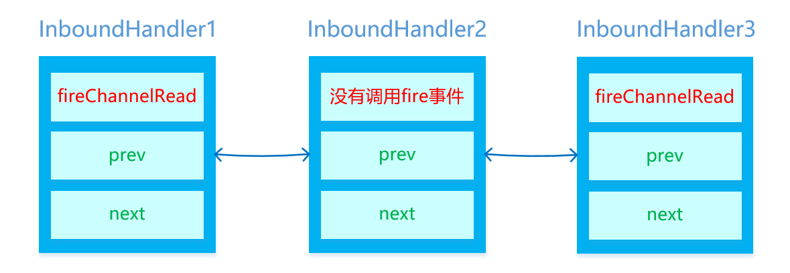
如上图所示，InboundHandler2没有调用fire方法：
1 public void channelRead(ChannelHandlerContext ctx, Object msg) throws Exception {
2 System.out.println("进入 EchoInboundHandler1.channelRead");
3
4 String data = ((ByteBuf)msg).toString(CharsetUtil.UTF_8);
5 System.out.println("EchoInboundHandler1.channelRead 收到数据：" + data);
6 //ctx.fireChannelRead(Unpooled.copiedBuffer("[EchoInboundHandler1] " + data, CharsetUtil.UTF_8));
7
8 System.out.println("退出 EchoInboundHandler1 channelRead");
9 }那么InboundHandler中的代码还会被执行到吗？看一下执行结果：
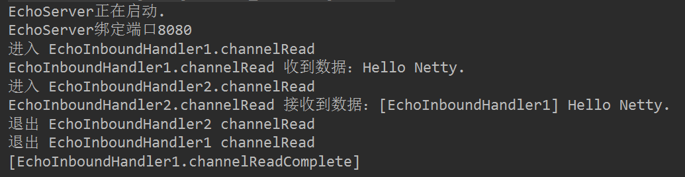
由上图可知，InboundHandler2没有调用fire事件，InboundHandler3没有被执行。
结论：InboundHandler是通过fire事件决定是否要执行下一个InboundHandler，如果哪个InboundHandler没有调用fire事件，那么往后的Pipeline就断掉了。
实验二：InboundHandler和OutboundHandler的执行顺序是什么？
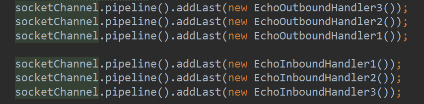
加入Pipeline的ChannelHandler的顺序如上图所示，那么最后执行的顺序如何呢？执行结果如下：
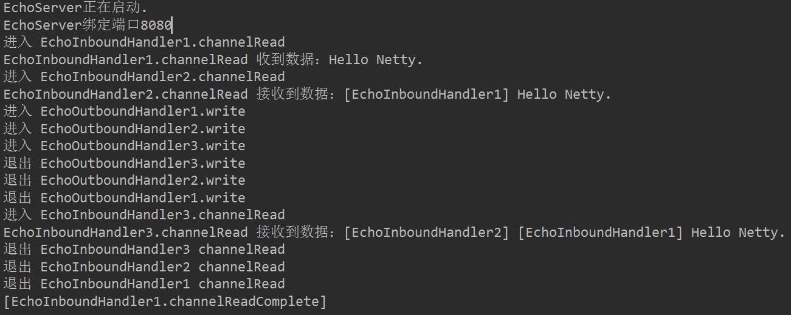
由上图可知，执行顺序为：
InboundHandler1 => InboundHandler2 => OutboundHandler1 => OutboundHander2 => OutboundHandler3 => InboundHandler3
所以，我们得到以下几个结论：
1、InboundHandler是按照Pipleline的加载顺序，顺序执行。
2、OutboundHandler是按照Pipeline的加载顺序，逆序执行。
实验三：如果把OutboundHandler放在InboundHandler的后面，OutboundHandler会执行吗？
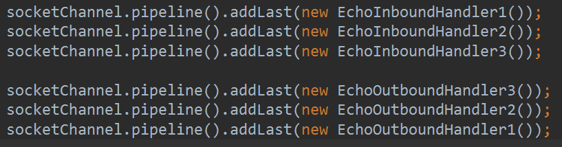
执行结果如下：
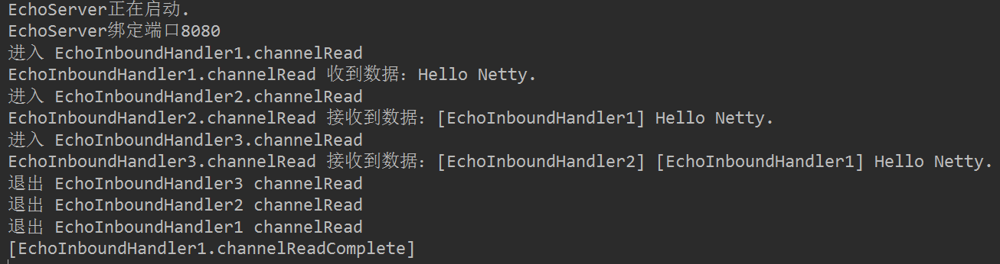
由此可见，OutboundHandler没有执行，为什么呢？因为Pipleline是执行完所有有效的InboundHandler，再返回执行在最后一个InboundHandler之前的OutboundHandler。注意，有效的InboundHandler是指fire事件触达到的InboundHandler，如果某个InboundHandler没有调用fire事件，后面的InboundHandler都是无效的InboundHandler。为了印证这一点，我们继续做一个实验，我们把其中一个OutboundHandler放在最后一个有效的InboundHandler之前，看看这唯一的一个OutboundHandler是否会执行，其他OutboundHandler是否不会执行。
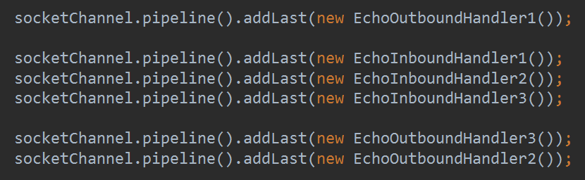
执行结果如下：
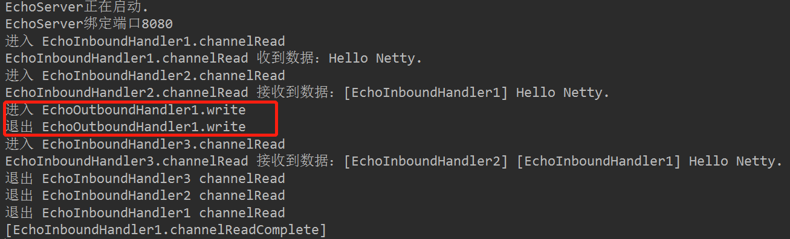
由此可见，只执行了OutboundHandler1，其他OutboundHandler没有被执行。
所以，我们得到以下几个结论：
1、有效的InboundHandler是指通过fire事件能触达到的最后一个InboundHander。
2、如果想让所有的OutboundHandler都能被执行到，那么必须把OutboundHandler放在最后一个有效的InboundHandler之前。
3、推荐的做法是通过addFirst加载所有OutboundHandler，再通过addLast加载所有InboundHandler。
实验四：如果其中一个OutboundHandler没有执行write方法，那么消息会不会发送出去？
我们把OutboundHandler2的write方法注掉
1 public void write(ChannelHandlerContext ctx, Object msg, ChannelPromise promise) throws Exception {
2 System.out.println("进入 EchoOutboundHandler3.write");
3
4 //ctx.write(msg);
5
6 System.out.println("退出 EchoOutboundHandler3.write");
7 }执行结果如下：
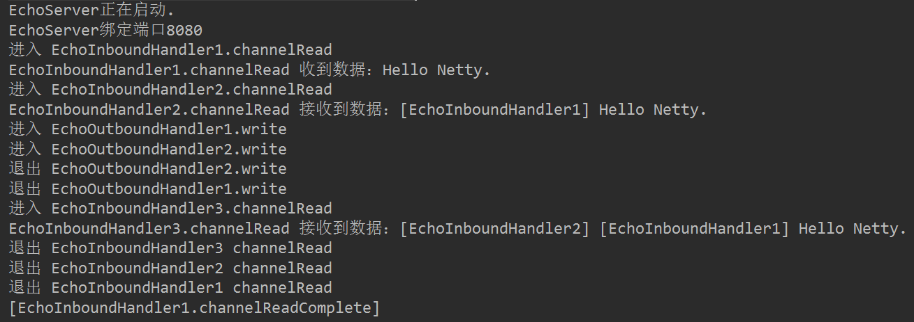
可以看到，OutboundHandler3并没有被执行到，另外，客户端也没有收到发送的消息。
所以，我们得到以下几个结论：
1、OutboundHandler是通过write方法实现Pipeline的串联的。
2、如果OutboundHandler在Pipeline的处理链上，其中一个OutboundHandler没有调用write方法，最终消息将不会发送出去。
实验五：ctx.writeAndFlush 的OutboundHandler的执行顺序是什么？
我们设定ChannelHandler在Pipeline中的加载顺序如下：
OutboundHandler3 => InboundHandler1 => OutboundHandler2 => InboundHandler2 => OutboundHandler1 => InboundHandler3
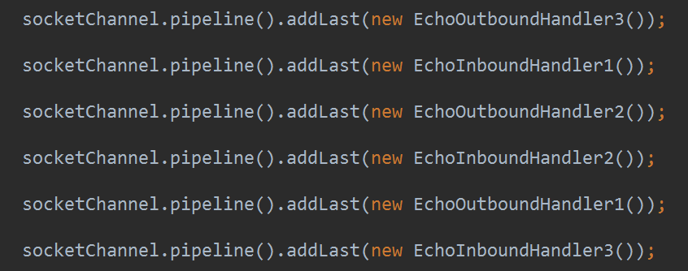
在InboundHander2中调用ctx.writeAndFlush：
1 public void channelRead(ChannelHandlerContext ctx, Object msg) throws Exception {
2 System.out.println("进入 EchoInboundHandler2.channelRead");
3
4 String data = ((ByteBuf) msg).toString(CharsetUtil.UTF_8);
5 System.out.println("EchoInboundHandler2.channelRead 接收到数据：" + data);
6 ctx.writeAndFlush(Unpooled.copiedBuffer("[第一次write] [EchoInboundHandler2] " + data, CharsetUtil.UTF_8));
7 //ctx.channel().writeAndFlush(Unpooled.copiedBuffer("测试一下channel().writeAndFlush", CharsetUtil.UTF_8));
8 ctx.fireChannelRead(Unpooled.copiedBuffer("[EchoInboundHandler2] " + data, CharsetUtil.UTF_8));
9
10 System.out.println("退出 EchoInboundHandler2 channelRead");
11 }执行结果如下：
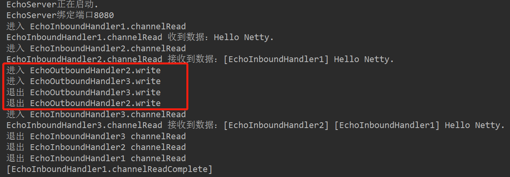
由上图可知，依次执行了OutboundHandler2和OutboundHandler3，为什么会这样呢？因为ctx.writeAndFlush是从当前的ChannelHandler开始，向前依次执行OutboundHandler的write方法，所以分别执行了OutboundHandler2和OutboundHandler3：
OutboundHandler3 => InboundHandler1 => OutboundHandler2 => InboundHandler2 => OutboundHandler1 => InboundHandler3
所以，我们得到如下结论：
1、ctx.writeAndFlush是从当前ChannelHandler开始，逆序向前执行OutboundHandler。
2、ctx.writeAndFlush所在ChannelHandler后面的OutboundHandler将不会被执行。
实验六：ctx.channel().writeAndFlush 的OutboundHandler的执行顺序是什么？
还是实验五的代码，不同之处只是把ctx.writeAndFlush修改为ctx.channel().writeAndFlush。
1 public void channelRead(ChannelHandlerContext ctx, Object msg) throws Exception {
2 System.out.println("进入 EchoInboundHandler2.channelRead");
3
4 String data = ((ByteBuf) msg).toString(CharsetUtil.UTF_8);
5 System.out.println("EchoInboundHandler2.channelRead 接收到数据：" + data);
6 //ctx.writeAndFlush(Unpooled.copiedBuffer("[第一次write] [EchoInboundHandler2] " + data, CharsetUtil.UTF_8));
7 ctx.channel().writeAndFlush(Unpooled.copiedBuffer("测试一下channel().writeAndFlush", CharsetUtil.UTF_8));
8 ctx.fireChannelRead(Unpooled.copiedBuffer("[EchoInboundHandler2] " + data, CharsetUtil.UTF_8));
9
10 System.out.println("退出 EchoInboundHandler2 channelRead");
11 }执行结果如下：
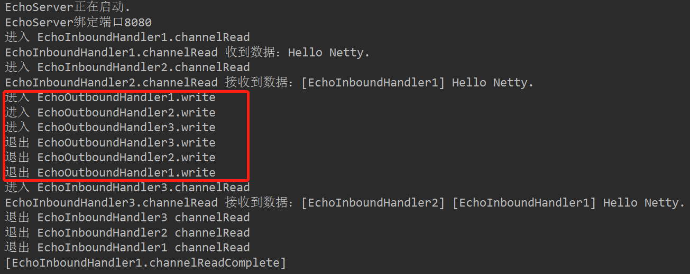
由上图可知，所有OutboundHandler都执行了，由此我们得到结论：
1、ctx.channel().writeAndFlush 是从最后一个OutboundHandler开始，依次逆序向前执行其他OutboundHandler，即使最后一个ChannelHandler是OutboundHandler，在InboundHandler之前，也会执行该OutbondHandler。
2、千万不要在OutboundHandler的write方法里执行ctx.channel().writeAndFlush，否则就死循环了。
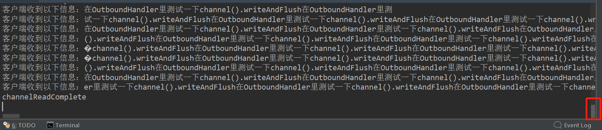
三、总结
1、InboundHandler是通过fire事件决定是否要执行下一个InboundHandler，如果哪个InboundHandler没有调用fire事件，那么往后的Pipeline就断掉了。
2、InboundHandler是按照Pipleline的加载顺序，顺序执行。
3、OutboundHandler是按照Pipeline的加载顺序，逆序执行。
4、有效的InboundHandler是指通过fire事件能触达到的最后一个InboundHander。
5、如果想让所有的OutboundHandler都能被执行到，那么必须把OutboundHandler放在最后一个有效的InboundHandler之前。
6、推荐的做法是通过addFirst加载所有OutboundHandler，再通过addLast加载所有InboundHandler。
7、OutboundHandler是通过write方法实现Pipeline的串联的。
8、如果OutboundHandler在Pipeline的处理链上，其中一个OutboundHandler没有调用write方法，最终消息将不会发送出去。
9、ctx.writeAndFlush是从当前ChannelHandler开始，逆序向前执行OutboundHandler。
10、ctx.writeAndFlush所在ChannelHandler后面的OutboundHandler将不会被执行。
11、ctx.channel().writeAndFlush 是从最后一个OutboundHandler开始，依次逆序向前执行其他OutboundHandler，即使最后一个ChannelHandler是OutboundHandler，在InboundHandler之前，也会执行该OutbondHandler。
12、千万不要在OutboundHandler的write方法里执行ctx.channel().writeAndFlush，否则就死循环了。